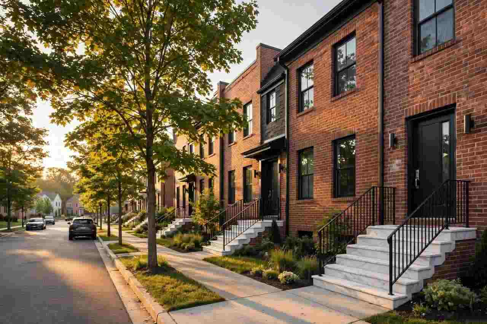

Rodent Control · Garrett Park, MD
Trusted Rodent Control in Garrett Park, MD
Murvo delivers same-day rodent control in Garrett Park for rats and mice in attics, walls, kitchens, and crawl spaces. Local crews start with a thorough inspection, then remove, exclude, and monitor until the problem is solved. You approve one flat-rate price in writing before any work starts, and every job carries a written guarantee across Montgomery County. Service covers 1 ZIP codes across Montgomery County, including 20896, with same-day appointments where schedules allow.
24/7Availability
1ZIP codes covered
Same-dayResponse
Licensed · Upfront options · Written guarantees · Fully insured
Garrett Park at a glance
Local Rodent Control for Garrett Park, MD.
Montgomery County
Countycentral Maryland
RegionColumbia · 17 mi
Nearest metro33 miles west of Annapolis
From Annapolis1
ZIP codes covered Service by service in Garrett Park
Rodent Control Services Available in Garrett Park
Rodent-only specialists serving Garrett Park and Montgomery County. Every service below is explained in local terms - the species involved, the entry points that matter in historic rowhomes, brick twins, older apartments, and wooded suburban single-family homes, and the seasonal timing that decides whether a fix lasts.
- 01Rodent Control↗
- 02Rodent Inspection↗
- 03Rodent Removal↗
- 04Rodent Exclusion↗
- 05Rodent Proofing↗
- 06Rat Control↗
- 07Mice Control↗
- 08Mouse Removal↗
- 09Rat Removal↗
- 10Rodent Trapping↗
- 11Rodent Baiting↗
- 12Rodenticide Application↗
- 13Attic Rodent Removal↗
- 14Crawl Space Rodent Removal↗
- 15Wall Rodent Removal↗
- 16Kitchen Rodent Control↗
- 17Garage Rodent Control↗
- 18Commercial Rodent Control↗
- 19Residential Rodent Control↗
- 20Emergency Rodent Removal↗
- 21Same-Day Rodent Control↗
- 22Rodent Damage Repair↗
- 23Rodent Waste Cleanup↗
- 24Rodent Disinfection↗
- 25Rodent Odor Removal↗
- 26Dead Rodent Removal↗
- 27Rodent Dropping Cleanup↗
- 28Rodent Exclusion for Roofs↗
- 29Rodent Exclusion for Vents↗
- 30Rodent Exclusion for Chimneys↗
Rodent Control in Garrett Park
Rodent Control in Garrett Park
Most Garrett Park calls start with a sound nobody can place, then droppings confirm what the noise suggested. Murvo treats rodent control as a sequence, not a single visit: find the species, clear what is inside, close what let it in. Before any work begins, you approve a flat-rate written quote.
In Garrett Park, rodent control is not a generic spray-and-go service. Rodents exploit alley-facing doors and garages, basement foundations, sewer laterals, and gaps around utility lines in historic rowhomes, brick twins, older apartments, and wooded suburban single-family homes, and a fix that ignores those routes does not last. Murvo's Garrett Park team inspects first, shows you the evidence - droppings, gnaw marks, entry gaps - and then lays out the work with a flat-rate written quote. We serve all of Montgomery County from Garrett Park, including North Kensington, Kensington, and every job is covered by our written workmanship guarantee. Coverage for rodent control spans 1 ZIP codes in Montgomery County, including 20896.
Our process follows five stages: Inspect, Remove, Exclude, Clean, and Monitor. Active animals are cleared with targeted trapping matched to the species, then openings around pipes, vents, and rooflines are sealed with copper mesh, hardware cloth, and metal flashing. Contaminated areas are cleaned safely, and monitoring visits confirm activity has stopped before we sign the job off. A technician first checks the attic, crawl space, garage, and kitchen, recording droppings, nests, gnaw marks, and entry gaps with photos. You approve every stage in advance, in writing.
Booking takes one call, and same-day appointments are available in most Garrett Park areas. At the final visit we walk the finished work together and confirm monitoring is clear. Your technician inspects first, talks you through the plan in plain language, and only starts once you approve the written quote. Work is carried out in stages, with trap checks and sealing visits booked ahead. Questions are answered at every stage, day or night.
Need help quickly in Garrett Park? Call any time — the emergency line is staffed 24/7, and same-day rodent control appointments are available in most areas. We inspect first, explain the plan in plain language, and put the flat rate in writing before work starts. A Garrett Park inspection confirms it on site - dropping size, gnaw marks, and entry points tell the story quickly.
The honest answer is that it depends on species, activity level, and how much sealing your home needs, which is why Murvo inspects first and then gives you a flat-rate quote in writing. For national context only, Angi's 2026 data averages rat and mouse removal and control at $396, typically $189 to $655; that is not a Murvo price, and your written quote is the figure you pay.
Rodent Inspection in Garrett Park
Rodent Inspection in Garrett Park
You do not need to see a rodent to have a rodent problem in Garrett Park. Droppings in the attic, gnaw marks near alley-facing doors and garages, basement foundations, sewer laterals, and gaps around utility lines, or noises after dark are enough reason to book a rodent inspection. Murvo technicians check the whole property, photograph what they find, and give you a prioritized plan plus a flat-rate written quote for any work recommended.
Homeowners in Garrett Park call Murvo for rodent inspection because the problem here is specific: Norway rat (Rattus norvegicus) pressure around historic rowhomes, brick twins, older apartments, and wooded suburban single-family homes, tight access at alley-facing doors and garages, basement foundations, sewer laterals, and gaps around utility lines, and activity that follows the local season. Our Montgomery County crews diagnose the real source before recommending work, explain the options in plain language, and quote one flat rate in writing. Across Garrett Park - including North Kensington, Kensington - every visit is backed by licensed, insured technicians and our written workmanship guarantee. Coverage for rodent inspection spans 1 ZIP codes in Montgomery County, including 20896.
We listen first: when you hear noises, and where, often points straight to the most active nesting areas. The visit ends with a written report covering species, entry points, contamination, and the removal and exclusion steps we recommend, each with a flat-rate price. Technicians then trace active runways, identify whether droppings belong to Norway rat (Rattus norvegicus) or House mouse (Mus musculus), and check insulation and wiring for damage. That detail stops you paying for treatment aimed at the wrong species or the wrong part of the building.
To book, call any time; urgent inspections are answered 24/7. On the day, your technician works through the property methodically, reviews photographs with you on site, and leaves written findings plus any quote before departing. We agree a window, note where you have noticed signs, and confirm access to the attic and crawl space. You keep the report either way, and it remains useful for staging repairs later or comparing conditions at a future seasonal check.
Inspections are the fastest way we help in Garrett Park: same-day appointments are available in most areas, and urgent calls are answered 24/7. A typical rodent inspection takes under an hour for most homes, and you leave the visit with photos, written findings, and a flat-rate quote for any work we recommend, so decisions never wait on us. Around Garrett Park, historic rowhomes, brick twins, older apartments, and wooded suburban single-family homes give rodents the most cover, which is why entry points get checked before traps are set.
Nationally, a professional rodent inspection typically runs $100 to $200 according to Angi's 2026 data, and it is often credited toward the job if you proceed. Murvo confirms your exact rodent inspection price before the visit and quotes any follow-up work as a flat rate in writing after inspection, so the figure you approve is the figure you pay, with no hourly billing.
Rodent Removal in Garrett Park
Rodent Removal in Garrett Park
Finding droppings in the kitchen or hearing scratching overhead in Garrett Park means rodents are already living indoors, and they will not leave on their own. Murvo's rodent removal clears active Norway rat (Rattus norvegicus) and House mouse (Mus musculus) with targeted trapping, removes animals hygienically, and closes the entry points behind them. One flat-rate written quote covers the program before work begins.
Homeowners in Garrett Park call Murvo for rodent removal because the problem here is specific: Norway rat (Rattus norvegicus) pressure around historic rowhomes, brick twins, older apartments, and wooded suburban single-family homes, tight access at alley-facing doors and garages, basement foundations, sewer laterals, and gaps around utility lines, and activity that follows the local season. Our Montgomery County crews diagnose the real source before recommending work, explain the options in plain language, and quote one flat rate in writing. Across Garrett Park - including North Kensington, Kensington - every visit is backed by licensed, insured technicians and our written workmanship guarantee. Coverage for rodent removal spans 1 ZIP codes in Montgomery County, including 20896.
We favor trap-based, no-poison removal first where practical, which is safer around children and pets and avoids animals dying in hidden voids. Dead animals in inaccessible places are located and retrieved before odor develops, contaminated nesting material is removed, and sealing recommendations are prioritized so the route indoors closes permanently. Traps are matched to the species and setting, placed where droppings and rub marks show real travel routes, then cleared and reset until numbers reach zero. Monitoring then confirms the home stays clear.
Call, describe the signs, and we will set a visit window, often for the same day. The first appointment confirms species and numbers, explains the trapping sequence, and produces your written quote. With approval, traps go in immediately. Return visits are already booked, so clearing, resetting, and progress updates happen without you chasing anyone for news. Photographs and catch records are shared as the program runs, giving you visible proof of progress rather than a verbal summary at the end.
For active infestations in Garrett Park, rodent removal can usually start the same day you call, and our team answers 24/7 when a rodent is loose in a living area. The first visit confirms activity and sets traps straight away; return visits then clear and reset them until monitoring shows the property is completely clear. In Montgomery County, most cases involve the Norway rat (Rattus norvegicus) and the House mouse (Mus musculus), so the inspection focuses on their routes first.
Cost depends on the species, how many animals are active, and how much sealing the home needs afterwards, so Murvo inspects first and quotes one flat rate in writing. For national context only, Angi's 2026 data averages rat and mouse removal at $396, typically $189 to $655. That benchmark is not a Murvo price; your written quote is the exact figure.
Rodent Exclusion in Garrett Park
Rodent Exclusion in Garrett Park
In historic rowhomes, brick twins, older apartments, and wooded suburban single-family homes, exclusion is detective work as much as building work. Rub marks at alley-facing doors and garages, basement foundations, sewer laterals, and gaps around utility lines, droppings below a vent, and daylight under a door each point somewhere different in Montgomery County homes. Our technicians follow those clues for Norway rat (Rattus norvegicus) and House mouse (Mus musculus), prioritize active openings, and leave inactive weaknesses clearly noted.
In Garrett Park, rodent exclusion is not a generic spray-and-go service. Rodents exploit alley-facing doors and garages, basement foundations, sewer laterals, and gaps around utility lines in historic rowhomes, brick twins, older apartments, and wooded suburban single-family homes, and a fix that ignores those routes does not last. Murvo's Garrett Park team inspects first, shows you the evidence - droppings, gnaw marks, entry gaps - and then lays out the work with a flat-rate written quote. We serve all of Montgomery County from Garrett Park, including North Kensington, Kensington, and every job is covered by our written workmanship guarantee. Homes near North Chevy Chase tend to show activity first in Garrett Park, which is why inspections start with alley-facing doors and garages, basement foundations, sewer laterals, and gaps around utility lines.
Before any sealing, active rodents are cleared with trapping so nothing is trapped inside the structure. A final walkthrough shows you every protected opening, and monitoring checks confirm no new activity appears at sealed points. We then work opening by opening around alley-facing doors and garages, basement foundations, sewer laterals, and gaps around utility lines, rooflines, and utility penetrations, photographing each finished seal. Because exclusion removes the route in rather than relying on chemicals, it reduces the need for rodenticides and supports pet-safe, no-poison control. Every seal is listed on your written guarantee.
Before sealing day, confirm pets are secured and access to the roofline and foundation is clear. Afterwards you receive the photographs, the guarantee, and a date for the follow-up check that confirms everything is holding as intended. The crew then works through the agreed list, checks that no animals remain inside, and fits each seal cleanly. If monitoring ever finds fresh activity at a sealed point, that written inventory tells us exactly what to inspect first.
The first step is a survey, and in Garrett Park we can often schedule that survey the same day you call about rodent exclusion. Sealing follows once active animals are cleared — nothing is ever sealed inside — and most homes are fully sealed within days, with entry points near wiring or food areas handled first. The written quote for your Garrett Park property will spell out exactly which of these applies before any work starts.
For national context, Angi's 2026 data puts basic exclusion at $200 to $600, depending on access and the number of openings. That is a benchmark, not a Murvo price. After surveying your Garrett Park home, we list every opening that needs sealing and quote one flat rate in writing, so you pay for the work your property actually needs and nothing more.
Rodent Proofing in Garrett Park
Rodent Proofing in Garrett Park
As colder weather approaches Montgomery County, rodents actively hunt for warm indoor shelter, and unsealed homes are found fast. A Murvo rodent proofing survey checks the roofline, vents, utility entries, and doors before that rush begins. Because proofing prevents infestations instead of reacting to them, it reduces reliance on baits and is backed by our written workmanship guarantee.
When you need rodent proofing in Garrett Park, the job starts with what is actually happening in your part of Montgomery County. Murvo crews work Garrett Park every week, so they know how Norway rat (Rattus norvegicus) and House mouse (Mus musculus) behave around historic rowhomes, brick twins, older apartments, and wooded suburban single-family homes here - and where they get in: alley-facing doors and garages, basement foundations, sewer laterals, and gaps around utility lines. We arrive equipped for the full job, confirm the flat rate in writing before work begins, and cover the whole Garrett Park area, including North Kensington, Kensington. No call-center runaround and no open-ended hourly billing - just a local crew, a clear plan, and a written quote you approve first. Homes near North Chevy Chase tend to show activity first in Garrett Park, which is why inspections start with alley-facing doors and garages, basement foundations, sewer laterals, and gaps around utility lines.
Proofing divides naturally into structure, surroundings, and habits. Habits means securing pet food, bird seed, and stored produce so the property stops advertising itself. Structure means sealing utility entries, screening vents and chimneys, and fitting sweeps where doors leak light. Surroundings means trimming branches back from the roofline, moving clutter and timber away from walls, and reducing sheltered harborage. Technicians assess all three layers in one survey and rank the combined findings by impact, not by what is easiest to sell.
After booking, we confirm your appointment and any access needs, such as gates or attic hatches. Later re-checks verify sweeps, screens, and seals are still holding. On the day, your background-checked technician completes the survey and agreed proofing work in one visit where possible. Before leaving, you walk the finished sealing together, receive care and storage advice, and confirm the guarantee. Nothing is added to your bill without approval first.
Rodent proofing is preventive, so there is rarely a rush, but surveys in Garrett Park can often be arranged the same day you call, and always within a few days. Most proofing work is completed in a single visit once you approve the plan, and booking before colder weather gives your home protection ahead of the seasonal rush indoors. Around Garrett Park, historic rowhomes, brick twins, older apartments, and wooded suburban single-family homes give rodents the most cover, which is why entry points get checked before traps are set.
We survey your Garrett Park property first, separate the quick wins you can handle yourself from the specialist sealing, and quote the professional work as one flat rate in writing so spending can be staged. Angi's 2026 national context puts exclusion, the core of proofing, at $200 to $600 for basic work — a benchmark only, not a Murvo price.
Rat Control in Garrett Park
Rat Control in Garrett Park
What separates control from a temporary lull? Monitoring that continues after the last catch. Murvo keeps checking until routes stay quiet, removes trapped rats hygienically, and finishes with exclusion so replacements cannot follow the same path. Licensed, insured technicians document every visit, and urgent calls are answered 24/7.
When you need rat control in Garrett Park, the job starts with what is actually happening in your part of Montgomery County. Murvo crews work Garrett Park every week, so they know how Norway rat (Rattus norvegicus) and House mouse (Mus musculus) behave around historic rowhomes, brick twins, older apartments, and wooded suburban single-family homes here - and where they get in: alley-facing doors and garages, basement foundations, sewer laterals, and gaps around utility lines. We arrive equipped for the full job, confirm the flat rate in writing before work begins, and cover the whole Garrett Park area, including North Kensington, Kensington. No call-center runaround and no open-ended hourly billing - just a local crew, a clear plan, and a written quote you approve first. Homes near North Chevy Chase tend to show activity first in Garrett Park, which is why inspections start with alley-facing doors and garages, basement foundations, sewer laterals, and gaps around utility lines.
Wary rats punish rushed trapping, so the program begins with patience. Unset traps are placed on confirmed runways and pre-baited until feeding becomes confident and regular. Only then are traps set, checked frequently, and repositioned as the pattern shifts. Catches are recorded by location, giving a clear picture of colony size and movement. Exclusion follows at rooflines and entry points, and monitoring devices remain in place afterwards to verify that quiet routes have genuinely stayed quiet. Counts matter here, because a falling catch trend tells a different story from a single lucky night.
Call for rat control in Garrett Park and we will book an inspection, often the same day for active problems. Your technician maps routes and harborage, explains the trapping plan, and gives you a flat-rate written quote before any work begins. Trapping visits then run on a set schedule, with placements adjusted as activity shifts. The job closes only when monitoring confirms rats are gone and exclusion is complete. Your guarantee is confirmed in writing.
Call day or night — urgent rat control calls in Garrett Park are answered 24/7, and a same-day inspection can usually start the program. Pre-baiting begins on that first visit once you approve the written quote, traps are set when rats are feeding confidently, and scheduled checks continue until activity stops. If you are seeing signs now, an inspection this week is the fastest way to know which situation you are in.
Species, colony size, and the number of entry points to seal all affect rat work, which is why Murvo inspects first and quotes one flat rate in writing. Angi's 2026 figures, given for national context only, average rat control and removal at $396 and typically run $189 to $655; the written quote for your Garrett Park home is the exact price.
Mice Control in Garrett Park
Mice Control in Garrett Park
In historic rowhomes, brick twins, older apartments, and wooded suburban single-family homes, mice think small, and control has to think smaller. A gap at alley-facing doors and garages, basement foundations, sewer laterals, and gaps around utility lines no wider than a pencil is an open door, and pipe runs become private highways across Montgomery County homes. Our technicians hunt those overlooked routes for House mouse (Mus musculus) activity, then combine trapping, sealing, and food-storage advice.
In Garrett Park, mice control is not a generic spray-and-go service. Rodents exploit alley-facing doors and garages, basement foundations, sewer laterals, and gaps around utility lines in historic rowhomes, brick twins, older apartments, and wooded suburban single-family homes, and a fix that ignores those routes does not last. Murvo's Garrett Park team inspects first, shows you the evidence - droppings, gnaw marks, entry gaps - and then lays out the work with a flat-rate written quote. We serve all of Montgomery County from Garrett Park, including North Kensington, Kensington, and every job is covered by our written workmanship guarantee. Coverage for mice control spans 1 ZIP codes in Montgomery County, including 20896.
Mice travel short, familiar routes, hugging walls and rarely crossing open floors. Sealing then closes pencil-width gaps behind baseboards, around radiator pipes, and at service entries, while scent-marked surfaces are cleaned so new mice find no welcoming trail. Control exploits that habit: traps are clustered along baseboards, behind appliances, and inside attic voids where droppings concentrate, rather than scattered hopefully around rooms. Technicians clear and reset on schedule, tracking numbers visit by visit until they reach zero. That is why placements stay fixed between checks unless evidence, rather than impatience, gives a reason to move them.
Book with one call and tell us which rooms show signs; same-day surveys are often possible. Your technician inspects kitchen, attic, and voids, explains the route map, and quotes in writing before traps are set. Check visits are scheduled immediately, and each one reports catches plainly until the final confirmation visit shows activity has stopped. The final confirmation matters, because mice can go quiet briefly while a nest remains, and monitoring distinguishes quiet from genuinely finished.
Mice programs move quickly in Garrett Park: a mice control survey can often be arranged the same day you call, and traps are set on that first visit once you approve the quote. Because mice investigate new objects fast, catches usually begin quickly, and scheduled check visits follow until a final confirmation shows activity has fully stopped. The written quote for your Garrett Park property will spell out exactly which of these applies before any work starts.
The number of rooms affected and the amount of sealing required set the price, so Murvo surveys first and quotes one flat rate in writing. For national context only, Angi's 2026 data averages rat and mouse control and removal at $396, typically $189 to $655 — not a Murvo price; your written quote is exact.
Mouse Removal in Garrett Park
Mouse Removal in Garrett Park
What does proper removal include beyond the traps themselves? Hygienic clearing of droppings and nesting, disinfection of affected cabinets, and sealing that stops the next mice using the same scent trails. Murvo delivers that complete finish with licensed, insured technicians and a written workmanship guarantee on the completed work.
In Garrett Park, mouse removal is not a generic spray-and-go service. Rodents exploit alley-facing doors and garages, basement foundations, sewer laterals, and gaps around utility lines in historic rowhomes, brick twins, older apartments, and wooded suburban single-family homes, and a fix that ignores those routes does not last. Murvo's Garrett Park team inspects first, shows you the evidence - droppings, gnaw marks, entry gaps - and then lays out the work with a flat-rate written quote. We serve all of Montgomery County from Garrett Park, including North Kensington, Kensington, and every job is covered by our written workmanship guarantee. Around North Chevy Chase, Forest Glen, North Kensington, the pattern is similar: House mouse (Mus musculus) finds alley-facing doors and garages, basement foundations, sewer laterals, and gaps around utility lines first, and lasting mouse removal has to close those routes.
We favor trap-based, no-poison removal, which is safer around children and pets and avoids mice dying in hidden voids. Cleanup follows CDC guidance: droppings and nesting debris are never dry-swept, because that can spread contamination; surfaces are disinfected first, then waste is removed hygienically. We also advise on safe cleaning of cabinets and storage areas afterwards, so your kitchen feels properly yours again once the program is complete and monitoring confirms zero activity. Sealing then closes the route permanently. That finish is guaranteed in writing.
Booking takes one call. Work begins only after you approve the written quote, and trap checks are booked ahead so nothing drifts. At sign-off we review catch records together, confirm sealing is complete, and leave you with guarantee paperwork and prevention advice. We agree a time window, and your background-checked technician arrives ready to survey attics, cabinets, and voids in one visit. Rooms are confirmed fully safe to use again.
In Garrett Park, mouse removal can often begin the same day you call, especially where mice are active in kitchens or living areas. The first visit surveys nesting sites and sets traps immediately after you approve the quote; because mice investigate traps quickly, catches usually start fast, and return visits continue until numbers reach zero. In Montgomery County, activity follows the local season, so timing the work matters as much as the method.
Rooms involved and sealing needed determine the cost of removal, so we survey first and agree a flat rate in writing before work begins. As national context only, Angi's 2026 data averages rat and mouse removal at $396, with a typical range of $189 to $655; that benchmark is not a Murvo price, and your written quote covers your exact program.
Rat Removal in Garrett Park
Rat Removal in Garrett Park
Most Garrett Park rat removals fail elsewhere for one reason: the colony was larger than the first visit assumed. Murvo assesses species and scale before trapping, pre-baits on confirmed runways, and returns until monitoring proves the colony gone. A flat-rate written quote is agreed before any trap is set.
In Garrett Park, rat removal is not a generic spray-and-go service. Rodents exploit alley-facing doors and garages, basement foundations, sewer laterals, and gaps around utility lines in historic rowhomes, brick twins, older apartments, and wooded suburban single-family homes, and a fix that ignores those routes does not last. Murvo's Garrett Park team inspects first, shows you the evidence - droppings, gnaw marks, entry gaps - and then lays out the work with a flat-rate written quote. We serve all of Montgomery County from Garrett Park, including North Kensington, Kensington, and every job is covered by our written workmanship guarantee. Coverage for rat removal spans 1 ZIP codes in Montgomery County, including 20896.
Removal stays trap-led and exclusion-backed throughout. After clearance, contaminated areas are sanitized carefully, with surfaces disinfected before cleaning and droppings never dry-swept. Monitoring devices and a documented final walkthrough then prove activity has ended, and proofing advice covers drains, vents, and rooflines going forward. Locked bait stations appear only where a site genuinely justifies them, positioned away from pets and food, labeled, and monitored on schedule; loose bait is never used. That written evidence stays with you, including the monitoring readings that supported the decision to sign off.
Book rat removal in Garrett Park and we will agree a visit time, with same-day appointments available for active infestations. Repeat visits are scheduled ahead to remove animals and adjust traps. At the end, monitoring and a walkthrough confirm clearance, backed by our written workmanship guarantee. Your technician assesses species and colony size, explains the program, and confirms a flat-rate written quote before trapping starts. You see documented evidence of the result.
Rats in a living area cannot wait for a routine slot. In Garrett Park, rat removal can usually start the same day you call and our line answers 24/7 for urgent cases. Pre-baiting starts on the first visit after you approve the written quote, traps are set once rats feed confidently — typically within days — and frequent returns run until monitoring confirms the colony is gone. In Montgomery County, most cases involve the Norway rat (Rattus norvegicus) and the House mouse (Mus musculus), so the inspection focuses on their routes first.
Rat removal pricing depends on colony size, access, and the sealing needed afterwards, so Murvo assesses your property first and quotes a flat rate in writing. For national context only, Angi's 2026 data averages rat removal at $396, typically $189 to $655. That is a benchmark, not a Murvo price, and your written quote covers the full program described.
Rodent Trapping in Garrett Park
Rodent Trapping in Garrett Park
Why choose trapping over poison in a family home? Every result is visible, countable, and removable, with no chemicals loose indoors and no animals dying in hidden voids. Murvo offers snap, multi-catch, and live-capture options, explains each placement for pet and child safety, and guarantees the finished program in writing.
In Garrett Park, rodent trapping is not a generic spray-and-go service. Rodents exploit alley-facing doors and garages, basement foundations, sewer laterals, and gaps around utility lines in historic rowhomes, brick twins, older apartments, and wooded suburban single-family homes, and a fix that ignores those routes does not last. Murvo's Garrett Park team inspects first, shows you the evidence - droppings, gnaw marks, entry gaps - and then lays out the work with a flat-rate written quote. We serve all of Montgomery County from Garrett Park, including North Kensington, Kensington, and every job is covered by our written workmanship guarantee. Around North Chevy Chase, Forest Glen, North Kensington, the pattern is similar: House mouse (Mus musculus) finds alley-facing doors and garages, basement foundations, sewer laterals, and gaps around utility lines first, and lasting rodent trapping has to close those routes.
A trapping program starts with inspection: identifying the species, mapping runways, and finding where droppings and rub marks show real travel. Technicians return on schedule to clear, reset, and record every catch. Traps are set perpendicular to walls and along beams, pipes, and fence lines, matched to the setting. For rats, we pre-bait unset traps for several days, a step most DIY attempts skip, then set them for maximum effect. Mice receive clustered traps at hotspots. Placements shift as activity patterns change.
Book rodent trapping in Garrett Park and a technician can often start the same day. The first visit inspects, maps activity, and places or pre-baits traps; you approve a flat-rate written quote covering the program including check visits before we proceed. Scheduled returns clear and reset traps and share catch records with you. When numbers reach zero, we confirm monitoring is clear and discuss sealing. The finished program is guaranteed in writing.
In Garrett Park, rodent trapping can usually start the same day you call, with traps placed or pre-baiting begun on the first visit after you approve the quote. Mice often investigate within the first night; wary rats need a few days of pre-baiting before traps are set. Scheduled check visits then keep catches moving until numbers reach zero. A Garrett Park inspection confirms it on site - dropping size, gnaw marks, and entry points tell the story quickly.
Rather than charging by the trap or by the visit, Murvo inspects first and quotes rodent trapping as one flat rate in writing for the complete program, including its check visits. Price depends on species, activity level, and how many checks are needed, and there is no hourly billing at any stage, so there are no per-visit surprises.
Rodent Baiting in Garrett Park
Rodent Baiting in Garrett Park
Baiting suits established rat activity outdoors or in garages around Garrett Park, where droppings keep returning despite traps. Even then, our approach is exclusion-first: seal the entry points around alley-facing doors and garages, basement foundations, sewer laterals, and gaps around utility lines, trap what is already inside, and use locked stations only to reduce outdoor pressure. Stations are labeled, secured, photographed, and removed once monitoring shows activity has ended.
Homeowners in Garrett Park call Murvo for rodent baiting because the problem here is specific: Norway rat (Rattus norvegicus) pressure around historic rowhomes, brick twins, older apartments, and wooded suburban single-family homes, tight access at alley-facing doors and garages, basement foundations, sewer laterals, and gaps around utility lines, and activity that follows the local season. Our Montgomery County crews diagnose the real source before recommending work, explain the options in plain language, and quote one flat rate in writing. Across Garrett Park - including North Kensington, Kensington - every visit is backed by licensed, insured technicians and our written workmanship guarantee. Seasonal timing matters for rodent baiting in Garrett Park: rodents surge in Garrett Park from October through March.
Where baiting is not appropriate indoors, we say so, and recommend trapping first followed by proofing of gaps around pipes, vents, and doors. Consumption records from each visit show whether activity is falling, holding, or moving, guiding whether stations stay, move, or come out entirely in favor of sealing and trapping alone. That exclusion-first approach reduces reliance on bait over time, which matters for households with children, pets, or visiting wildlife in Garrett Park. You receive those records after every monitoring visit.
During monitoring, keep station areas undisturbed and tell us about any change in droppings or sightings. Your technician checks consumption on schedule, reports the trend plainly, and adjusts or removes stations as evidence dictates. The program closes with stations out, sealing recommendations confirmed, and the full record, including photographs, left with you in writing. If your household circumstances change, tell us; station locations and the wider plan can be reviewed and adjusted at the next check.
In Garrett Park, rodent baiting starts with an inspection visit we can often arrange the same day you call. Stations are only placed after activity is mapped and you approve the written quote and each location, so setup is deliberate rather than rushed. Monitoring visits then run on a fixed schedule until consumption stops and activity is confirmed clear. In Montgomery County, activity follows the local season, so timing the work matters as much as the method.
Baiting cost depends on how many locked stations your property needs and how long monitoring runs, so Murvo inspects and maps activity first, then quotes one flat rate in writing covering placement and scheduled checks. There are no per-visit surprises, and because our approach is exclusion-first, the goal is always to reduce and eventually remove stations, not maintain them forever.
Rodenticide Application in Garrett Park
Rodenticide Application in Garrett Park
What does the law in Maryland allow, and what will you be told? State rules restrict certain rodenticides, and Murvo complies with every applicable rule on every job. You receive label and safety information for any product used at your Garrett Park property before application begins.
Homeowners in Garrett Park call Murvo for rodenticide application because the problem here is specific: Norway rat (Rattus norvegicus) pressure around historic rowhomes, brick twins, older apartments, and wooded suburban single-family homes, tight access at alley-facing doors and garages, basement foundations, sewer laterals, and gaps around utility lines, and activity that follows the local season. Our Montgomery County crews diagnose the real source before recommending work, explain the options in plain language, and quote one flat rate in writing. Across Garrett Park - including North Kensington, Kensington - every visit is backed by licensed, insured technicians and our written workmanship guarantee. Seasonal timing matters for rodenticide application in Garrett Park: rodents surge in Garrett Park from October through March.
Application begins with a thorough inspection to confirm species and activity levels and to decide whether rodenticide is needed at all; often, professional trapping plus controlled outdoor baiting is enough, and if trapping alone can solve your problem safely, that is the route we recommend first. When treatment is justified, we follow Inspect, Remove, Exclude, Clean, and Monitor: stations are mapped, labeled, anchored, and checked on schedule, with amounts recorded at every visit. Products stay inside locked stations at all times.
Start with the inspection, often bookable the same day, and expect alternatives explained before products are discussed. Your licensed technician confirms whether treatment is justified, reviews safety information with you, and provides the written quote. Application happens only after approval, with monitoring visits scheduled and a clear stopping point agreed in advance. You can pause or stop the program at any point, and stopping triggers removal of stations rather than leaving them behind unattended.
No responsible rodenticide application starts without an inspection, and in Garrett Park that inspection can often be scheduled the same day you call. If treatment is justified and you approve the written quote, locked stations are installed on that visit. Monitoring then runs on schedule, and treatment stops as soon as the data shows activity has ended. If you are seeing signs now, an inspection this week is the fastest way to know which situation you are in.
Application cost depends on the number of locked stations, the product required under Maryland rules, and how long monitoring runs. Murvo inspects first, explains whether trapping or exclusion could avoid chemical control entirely, and then quotes one flat rate in writing before work begins. The quote covers scheduled monitoring visits, so there are no per-visit surprises later.
Attic Rodent Removal in Garrett Park
Attic Rodent Removal in Garrett Park
When chewed wiring appears overhead, treat it as urgent; damaged cables are a real fire risk. Murvo prioritizes those Garrett Park attics, clears animals with targeted trapping rather than poison, leaves monitoring briefly after sealing to confirm nothing remains inside, and backs the finished work with a written workmanship guarantee.
When you need attic rodent removal in Garrett Park, the job starts with what is actually happening in your part of Montgomery County. Murvo crews work Garrett Park every week, so they know how Norway rat (Rattus norvegicus) and House mouse (Mus musculus) behave around historic rowhomes, brick twins, older apartments, and wooded suburban single-family homes here - and where they get in: alley-facing doors and garages, basement foundations, sewer laterals, and gaps around utility lines. We arrive equipped for the full job, confirm the flat rate in writing before work begins, and cover the whole Garrett Park area, including North Kensington, Kensington. No call-center runaround and no open-ended hourly billing - just a local crew, a clear plan, and a written quote you approve first. Around North Chevy Chase, Forest Glen, North Kensington, the pattern is similar: House mouse (Mus musculus) finds alley-facing doors and garages, basement foundations, sewer laterals, and gaps around utility lines first, and lasting attic rodent removal has to close those routes.
Cleanup overhead demands care. Adjoining crawl spaces are checked before the job is signed off as complete. Droppings and nesting material are never dry-swept, because that can spread contamination into the air; surfaces are disinfected first, then waste is removed hygienically by technicians in protective equipment. Contaminated insulation is assessed honestly, with repair referrals where replacement is warranted. Poison is avoided in attics deliberately, since animals dying in inaccessible corners create odor and retrieval problems. The result is a documented attic: cleared, sealed, cleaned where needed, and verified quiet before closure.
Before the visit, clear access to the attic hatch and note when noises are loudest. On arrival, your background-checked technician explains the plan, starts trapping once the quote is approved, and reports insulation and wiring findings plainly. The job closes with a monitoring check, a walkthrough of photographs, and guarantee paperwork in your hands. After sealing, a quiet attic is verified rather than assumed, and the monitoring result is reported to you before the job closes.
In Garrett Park, attic rodent removal visits are often available the same day, and we prioritize attics where chewed wiring creates a fire risk. Trapping starts on the first visit after you approve the written quote, checks run on schedule, and most attics are cleared and sealed within days, with monitoring left briefly to confirm nothing remains inside. The written quote for your Garrett Park property will spell out exactly which of these applies before any work starts.
Activity levels, roofline sealing, and whether contaminated insulation needs cleanup all affect attic pricing, so Murvo inspects first and quotes one flat rate in writing for the removal program. Cleanup options are priced separately in writing before you decide, so nothing is added once work is underway.
Crawl Space Rodent Removal in Garrett Park
Crawl Space Rodent Removal in Garrett Park
Under historic rowhomes, brick twins, older apartments, and wooded suburban single-family homes in Garrett Park, crawl spaces give Norway rat (Rattus norvegicus) and House mouse (Mus musculus) shelter reached through alley-facing doors and garages, basement foundations, sewer laterals, and gaps around utility lines, plus burrows at foundation vents and chewed pipe insulation. Standing water, leaking pipes, and stored timber underneath all raise rodent pressure, so our technicians flag those issues during inspection too. Removal carries one flat-rate written quote agreed before work begins.
In Garrett Park, crawl space rodent removal is not a generic spray-and-go service. Rodents exploit alley-facing doors and garages, basement foundations, sewer laterals, and gaps around utility lines in historic rowhomes, brick twins, older apartments, and wooded suburban single-family homes, and a fix that ignores those routes does not last. Murvo's Garrett Park team inspects first, shows you the evidence - droppings, gnaw marks, entry gaps - and then lays out the work with a flat-rate written quote. We serve all of Montgomery County from Garrett Park, including North Kensington, Kensington, and every job is covered by our written workmanship guarantee. In Garrett Park, crawl space rodent removal calls most often involve historic rowhomes, brick twins, older apartments, and wooded suburban single-family homes, where alley-facing doors and garages, basement foundations, sewer laterals, and gaps around utility lines decide whether the fix holds.
Cleanup below a home follows CDC guidance: droppings and nesting debris are never dry-swept, because disturbing them can spread contamination; surfaces are disinfected first, then waste is bagged and removed by technicians in protective equipment. Photographs of finished sealing are supplied with your guarantee paperwork, and access panels are refitted securely after every visit. We also trace connections upward through wall voids, since treating the crawl space alone misses rodents traveling to the attic. Moisture problems found are reported with practical recommendations.
Before the visit, unlock crawl-space access and mention any known leaks or standing water. Your background-checked technician inspects with protective equipment, sets traps at active areas after approval, and books follow-up visits ahead. Sign-off includes a walkthrough of the documented results, photographs of finished sealing, and your guarantee confirmed in writing for the completed work. Moisture findings are included in the closing notes, since fixing leaks and standing water lowers rodent pressure long after removal ends.
For crawl space rodent removal in Garrett Park, inspections are usually arranged within a few days — and sooner when odors are drifting into living areas or activity sounds heavy. Trapping begins on the first visit after you approve the written quote, clearance and sealing follow in sequence, and monitoring stays in place until the space below is confirmed quiet. If you are seeing signs now, an inspection this week is the fastest way to know which situation you are in.
Crawl-space costs depend on access, how many vents and gaps need sealing, and whether waste cleanup is required, so Murvo inspects first and quotes one flat rate in writing. If extra vents need sealing within the agreed scope, there are no surprises, and cleanup options are priced in writing before you decide whether to include them.
Wall Rodent Removal in Garrett Park
Wall Rodent Removal in Garrett Park
Scratching inside a wall in Garrett Park is maddening precisely because you cannot see what is causing it. Murvo's wall rodent removal locates activity using listening, thermal clues, and entry tracing, then places trapping at void access points to draw animals out without unnecessary demolition. A flat-rate written quote comes first, and access cuts are only made when truly needed.
When you need wall rodent removal in Garrett Park, the job starts with what is actually happening in your part of Montgomery County. Murvo crews work Garrett Park every week, so they know how Norway rat (Rattus norvegicus) and House mouse (Mus musculus) behave around historic rowhomes, brick twins, older apartments, and wooded suburban single-family homes here - and where they get in: alley-facing doors and garages, basement foundations, sewer laterals, and gaps around utility lines. We arrive equipped for the full job, confirm the flat rate in writing before work begins, and cover the whole Garrett Park area, including North Kensington, Kensington. No call-center runaround and no open-ended hourly billing - just a local crew, a clear plan, and a written quote you approve first. Around North Chevy Chase, Forest Glen, North Kensington, the pattern is similar: House mouse (Mus musculus) finds alley-facing doors and garages, basement foundations, sewer laterals, and gaps around utility lines first, and lasting wall rodent removal has to close those routes.
Wall work follows Inspect, Remove, Exclude, Clean, and Monitor. Trapping is then placed at void access points to draw rodents out, and technicians return to clear traps and adjust positions if monitoring shows activity has moved to another void. We start by locating activity precisely, tracing entry routes from the roofline, baseboards, and pipe runs into the void, and using cameras where access allows. Only where an animal cannot be reached any other way do we agree a minimal, repairable access cut.
After booking, tell us when the noises happen; timing helps pinpoint the active void before we arrive. Sign-off happens only when monitoring confirms silence. On the day, your background-checked technician listens, traces, and inspects with cameras where possible, then sets traps at access points once you approve the quote. Follow-up visits clear traps and run quiet-wall checks at different times of day. Any access cut is agreed and made good neatly.
Persistent wall scratching in Garrett Park often qualifies for a same-day locating visit, especially when it is keeping you awake. On that first visit, once you approve the written quote, traps are set at void access points; because rodents travel the void nightly, results usually follow within days. Quiet-wall checks confirm the silence before we sign off. That is also why Murvo pairs removal with exclusion in Garrett Park - treating the animal without closing alley-facing doors and garages, basement foundations, sewer laterals, and gaps around utility lines rarely lasts.
Wall work pricing depends on how precisely activity can be located and whether a minimal access cut is needed, which is why Murvo locates the activity first and quotes a flat rate in writing. That way wall access work never becomes an open-ended bill, and the quote covers the trapping, sealing, and monitoring described in your plan.
Kitchen Rodent Control in Garrett Park
Kitchen Rodent Control in Garrett Park
If you are hearing scratching under units at night in Garrett Park, the kitchen is rarely the whole story. Murvo traces routes from wall voids and basements, sets discreet traps away from food surfaces, and seals the real entry points. You get one flat-rate written quote before work starts.
In Garrett Park, kitchen rodent control is not a generic spray-and-go service. Rodents exploit alley-facing doors and garages, basement foundations, sewer laterals, and gaps around utility lines in historic rowhomes, brick twins, older apartments, and wooded suburban single-family homes, and a fix that ignores those routes does not last. Murvo's Garrett Park team inspects first, shows you the evidence - droppings, gnaw marks, entry gaps - and then lays out the work with a flat-rate written quote. We serve all of Montgomery County from Garrett Park, including North Kensington, Kensington, and every job is covered by our written workmanship guarantee. Around North Chevy Chase, Forest Glen, North Kensington, the pattern is similar: House mouse (Mus musculus) finds alley-facing doors and garages, basement foundations, sewer laterals, and gaps around utility lines first, and lasting kitchen rodent control has to close those routes.
Cupboard hinges, kick plates and pipe collars often reveal more than the room itself. We examine those details first, then work outward into adjoining voids and the basement or garage beyond. Removal stays targeted and discreet. Afterward, sealing closes the routes we documented, surfaces touched by droppings receive proper cleaning, and we walk through small habits that help: lids sealed, spills wiped from hidden edges, and pet food lifted overnight. Monitoring points stay in place until repeat visits show the kitchen has gone quiet.
When you book, we agree an arrival window and any access needs around appliances. Afterwards we monitor, report what we find at each visit, and only close the job when activity has stopped. The guarantee on the work is provided in writing. On site, inspection comes first, then your written quote and plan. Approved work covers removal, sealing and disinfection, carried out by licensed and insured technicians. Your technician explains each visit before leaving the property.
Our phone lines are open 24/7, and kitchen cases involving droppings near food preparation areas are treated as a priority. In many Garrett Park cases we can arrange a same-day visit, subject to technician availability. Call, describe what you have found, and we will offer the earliest appointment we can. Around Garrett Park, historic rowhomes, brick twins, older apartments, and wooded suburban single-family homes give rodents the most cover, which is why entry points get checked before traps are set.
Cost depends on how many rodents are active, where they are entering, and how much sealing and cleanup the kitchen needs. Murvo inspects first, then gives one flat-rate written quote covering trapping, sealing and follow-up monitoring, with no hourly billing or add-on surprises. You approve the full price before any work begins, and the quote is backed by our written workmanship guarantee.
Garage Rodent Control in Garrett Park
Garage Rodent Control in Garrett Park
That torn seed bag in the corner matters more than it looks. Garages shelter Norway rat (Rattus norvegicus) and House mouse (Mus musculus) close to stored food, soft nesting material and an easy path indoors. Murvo's garage rodent control in Garrett Park removes them, seals the door line and walls, and starts with a flat-rate written quote you approve first.
Homeowners in Garrett Park call Murvo for garage rodent control because the problem here is specific: Norway rat (Rattus norvegicus) pressure around historic rowhomes, brick twins, older apartments, and wooded suburban single-family homes, tight access at alley-facing doors and garages, basement foundations, sewer laterals, and gaps around utility lines, and activity that follows the local season. Our Montgomery County crews diagnose the real source before recommending work, explain the options in plain language, and quote one flat rate in writing. Across Garrett Park - including North Kensington, Kensington - every visit is backed by licensed, insured technicians and our written workmanship guarantee. In Garrett Park, garage rodent control calls most often involve historic rowhomes, brick twins, older apartments, and wooded suburban single-family homes, where alley-facing doors and garages, basement foundations, sewer laterals, and gaps around utility lines decide whether the fix holds.
Consider how a garage is actually used: bikes, bins, freezers and seasonal boxes all create hiding places. Removal follows the evidence we find. Then proofing closes wall gaps, vents and door edges, while damaged nesting material is cleared away. Our inspection moves zone by zone through that layout, noting food sources and the holes where cables or pipes cross into living areas. We also check connected rooms, since garage activity rarely stays contained, and schedule follow-up monitoring to confirm the whole route has shut down.
After booking, we agree access arrangements for vehicles and stored items. If activity persists within the guarantee terms, we return and address it, as set out in your written guarantee. Your technician inspects, quotes in writing, and only starts once you approve. Removal, proofing and cleanup follow in a sensible order, so sealing never traps animals inside. Monitoring continues afterwards, and we report progress at each visit. The plan is agreed with you before any work begins.
Our phones are answered 24/7, and garages with active nesting, damaged wiring or movement into the house are treated as urgent. Depending on technician schedules, a same-day appointment in Garrett Park is often possible. Describe the signs when you call and we will offer the earliest visit we can arrange. If you are seeing signs now, an inspection this week is the fastest way to know which situation you are in.
As a national benchmark, Angi's 2026 data shows rat extermination ranging from $189-$655, with an average of $396; that is context only, not a Murvo price. Garage work varies with size, activity and the proofing doors and walls require. After inspecting, Murvo quotes one flat rate in writing for trapping, nest removal, sealing and monitoring, for your approval before anything starts.
Commercial Rodent Control in Garrett Park
Commercial Rodent Control in Garrett Park
From kitchens and loading docks to bin areas and roof voids, commercial sites give Norway rat (Rattus norvegicus) and House mouse (Mus musculus) food, warmth and harbourage. Our commercial rodent control in Garrett Park finds the pressure points, removes activity, seals entry routes and reports every visit in writing for your compliance file. Background-checked technicians carry out every visit.
When you need commercial rodent control in Garrett Park, the job starts with what is actually happening in your part of Montgomery County. Murvo crews work Garrett Park every week, so they know how Norway rat (Rattus norvegicus) and House mouse (Mus musculus) behave around historic rowhomes, brick twins, older apartments, and wooded suburban single-family homes here - and where they get in: alley-facing doors and garages, basement foundations, sewer laterals, and gaps around utility lines. We arrive equipped for the full job, confirm the flat rate in writing before work begins, and cover the whole Garrett Park area, including North Kensington, Kensington. No call-center runaround and no open-ended hourly billing - just a local crew, a clear plan, and a written quote you approve first. Homes near North Chevy Chase tend to show activity first in Garrett Park, which is why inspections start with alley-facing doors and garages, basement foundations, sewer laterals, and gaps around utility lines.
For food premises the rules are strict: exclusion and hygiene first, locked stations only, complete records for every product used, and integrated pest management throughout. Contracts can cover a single site or multiple locations, with consistent reporting formats that make group compliance reviews straightforward for managers, auditors and environmental health officers alike. We assess waste handling, deliveries, storage and building fabric, then combine trapping, monitoring and proofing into one documented program. The same careful standard applies on every single visit.
Booking starts with a site survey, not a sales pitch. We inspect, document the risks, and quote in writing, so you know exactly what the program covers. Technicians then carry out removal and exclusion work around your hours, keeping customers unaware of any disruption. Each visit ends with a written service report. Regular reviews check trend data together, and our written workmanship guarantee covers the exclusion work we install. Nothing starts until you have approved the written quote.
Commercial calls are taken 24/7, and a live sighting during trading is handled as an emergency with discretion to protect customers and reputation. The visit we can offer in Garrett Park depends on technician availability, and we will always give you the earliest one possible. We can also advise on immediate steps to protect stock and your audit position while you wait. A Garrett Park inspection confirms it on site - dropping size, gnaw marks, and entry points tell the story quickly.
Commercial pricing depends on site size, sector, activity levels and how much exclusion and monitoring the site needs. Restaurants, warehouses and food premises are scoped individually after a survey. Murvo quotes a flat rate in writing for initial work, or a clear scheduled-service price for ongoing programs, before anything begins. There are no vague charges, and reports are included for your audit file.
Residential Rodent Control in Garrett Park
Residential Rodent Control in Garrett Park
For families in historic rowhomes, brick twins, older apartments, and wooded suburban single-family homes, the worry is understandable: droppings near food, noises at night, children and pets underfoot. Our residential rodent control in Garrett Park uses careful, pet-conscious methods, explains each step plainly, and keeps loose poison out of indoor areas. Licensed, insured technicians handle the visit from first inspection through final monitoring check.
In Garrett Park, residential rodent control is not a generic spray-and-go service. Rodents exploit alley-facing doors and garages, basement foundations, sewer laterals, and gaps around utility lines in historic rowhomes, brick twins, older apartments, and wooded suburban single-family homes, and a fix that ignores those routes does not last. Murvo's Garrett Park team inspects first, shows you the evidence - droppings, gnaw marks, entry gaps - and then lays out the work with a flat-rate written quote. We serve all of Montgomery County from Garrett Park, including North Kensington, Kensington, and every job is covered by our written workmanship guarantee. Homes near North Chevy Chase tend to show activity first in Garrett Park, which is why inspections start with alley-facing doors and garages, basement foundations, sewer laterals, and gaps around utility lines.
Every home visit follows Inspect, Remove, Exclude, Clean and Monitor. Exclusion seals the gaps found, cleanup disinfects contaminated areas, and monitoring visits confirm activity has ended rather than simply moved elsewhere in the house. Inspection covers attics, crawl spaces, garages, kitchens and the exterior, reading droppings, gnaw marks and rub marks to identify species and entry points such as alley-facing doors and garages, basement foundations, sewer laterals, and gaps around utility lines. Removal uses targeted trapping placed safely away from children and pets. Materials are chosen for durability, not the cheapest quick fix.
Book a visit and tell us about pets, children and where signs appeared. Your technician inspects the property, talks through what was found without jargon, and quotes the complete plan in writing. After approval, removal, sealing and cleaning proceed in a sensible sequence. We return for scheduled checks, share what each check shows, and finish only when monitoring confirms the home is clear. Prevention notes tailored to your layout are left with you at the end.
You can call us 24/7, and homes where rodents are in living areas, kitchens or children's bedrooms are prioritized in scheduling. A same-day visit in Garrett Park is often possible, subject to technician availability. Share what you have seen or heard and we will offer the earliest appointment available, plus advice for the meantime. The written quote for your Garrett Park property will spell out exactly which of these applies before any work starts.
Cost depends on the species, how established the infestation is, and how much exclusion and cleanup your home needs. Murvo inspects first, then quotes one flat rate in writing covering removal, sealing, cleaning and monitoring, with no hourly charges or add-on surprises. You approve the price before work begins, and everything is backed by our written workmanship guarantee.
Emergency Rodent Removal in Garrett Park
Emergency Rodent Removal in Garrett Park
Emergencies feel worse at night, which is why Murvo answers around the clock. In Garrett Park we prioritize live sightings, rodents in living areas and chewed wiring, then follow removal with sealing and disinfection. You receive a flat-rate written quote before work begins, even on urgent jobs.
When you need emergency rodent removal in Garrett Park, the job starts with what is actually happening in your part of Montgomery County. Murvo crews work Garrett Park every week, so they know how Norway rat (Rattus norvegicus) and House mouse (Mus musculus) behave around historic rowhomes, brick twins, older apartments, and wooded suburban single-family homes here - and where they get in: alley-facing doors and garages, basement foundations, sewer laterals, and gaps around utility lines. We arrive equipped for the full job, confirm the flat rate in writing before work begins, and cover the whole Garrett Park area, including North Kensington, Kensington. No call-center runaround and no open-ended hourly billing - just a local crew, a clear plan, and a written quote you approve first. Around North Chevy Chase, Forest Glen, North Kensington, the pattern is similar: House mouse (Mus musculus) finds alley-facing doors and garages, basement foundations, sewer laterals, and gaps around utility lines first, and lasting emergency rodent removal has to close those routes.
Urgent removal still follows our full process, just faster at the front end. You are told honestly what has been completed, what needs a follow-up visit, and what to watch for, with everything recorded on your written quote and guarantee. Inspection identifies species and scale, removal tackles the animals present, and exclusion stops replacements arriving. Where a rodent has died or nested indoors, cleanup and disinfection are arranged as part of the same plan. The same careful standard applies on every single visit.
Start by closing the door on the affected room if you safely can. Once approved, work proceeds right away: the rodent is removed, entry points are secured, and affected surfaces are treated. When you ring, we note the details, agree a visit, and talk through simple precautions for the wait. At your door, inspection and a written quote come before any removal. Follow-up visits then verify the property has settled and no further animals remain inside.
For emergencies, our line is open 24/7, every day, and calls from Garrett Park are triaged by risk — live rodents in living areas, food contamination and chewed wiring come first. We will offer the earliest visit our technicians can reach. Until then, we will talk you through simple steps to keep people and pets safe. If you are seeing signs now, an inspection this week is the fastest way to know which situation you are in.
For national context, Angi's 2026 data puts rat extermination at $189-$655, averaging $396, though emergency work is not priced from those figures and they are not Murvo prices. Location, numbers involved and the securing, cleanup or follow-up needed set the scope. On arrival Murvo inspects and quotes one flat rate in writing, with no hourly billing even on urgent jobs, and nothing starts until you approve it.
Same-Day Rodent Control in Garrett Park
Same-Day Rodent Control in Garrett Park
Finding droppings this morning should not mean waiting days for help. Our same-day rodent control in Garrett Park aims to inspect and start treatment the day you call, subject to availability, covering removal, sealing and monitoring from licensed, insured technicians who know local rodent behavior well. That is the standard Murvo works to in Maryland.
When you need same-day rodent control in Garrett Park, the job starts with what is actually happening in your part of Montgomery County. Murvo crews work Garrett Park every week, so they know how Norway rat (Rattus norvegicus) and House mouse (Mus musculus) behave around historic rowhomes, brick twins, older apartments, and wooded suburban single-family homes here - and where they get in: alley-facing doors and garages, basement foundations, sewer laterals, and gaps around utility lines. We arrive equipped for the full job, confirm the flat rate in writing before work begins, and cover the whole Garrett Park area, including North Kensington, Kensington. No call-center runaround and no open-ended hourly billing - just a local crew, a clear plan, and a written quote you approve first. Seasonal timing matters for same-day rodent control in Garrett Park: rodents surge in Garrett Park from October through March.
Technicians combine immediate action with lasting proofing. Follow-up work completes exclusion, disinfects contaminated areas and verifies results through monitoring. This staged approach means same-day speed where it matters, without skipping the sealing and checking that make results permanent for Garrett Park homes and businesses. Safety of occupants and pets guides every method chosen. The first visit removes pressure by setting traps and securing the most obvious gaps, while a full inspection maps every route rodents use around the building. Nothing is left to guesswork at any stage.
After you book, keep pets away from affected areas and leave droppings undisturbed for inspection. If activity continues within the guarantee terms, we return and address it, exactly as set out in your written guarantee. Your technician assesses, quotes in writing and starts approved work immediately: traps set, key gaps secured, contaminated areas treated. Follow-up visits check traps, complete exclusion and confirm results. The plan is agreed with you before any work begins.
Call as early in the day as you can and we will offer the earliest same-day appointment our Garrett Park technicians can reach, subject to availability. Our lines are open 24/7. If today is fully booked, we will offer the next available visit and advise on simple precautions to take meanwhile. That is also why Murvo pairs removal with exclusion in Garrett Park - treating the animal without closing alley-facing doors and garages, basement foundations, sewer laterals, and gaps around utility lines rarely lasts.
Same-day work is priced the same fair way as any Murvo job: inspection first, then one flat-rate written quote based on species, activity levels and the exclusion and cleanup needed. There is no hourly billing and no premium surprise for speed. You approve the full price before treatment begins, and the work is backed by our written workmanship guarantee.
Rodent Damage Repair in Garrett Park
Rodent Damage Repair in Garrett Park
Some damage hides where you cannot see it. Wiring gnawed inside a wall void or pipework scored in the crawl space can matter more than marks on a door frame. In Garrett Park, we assess room by room, flag safety concerns early, and repair the damage alongside exclusion so the same destruction is not repeated.
When you need rodent damage repair in Garrett Park, the job starts with what is actually happening in your part of Montgomery County. Murvo crews work Garrett Park every week, so they know how Norway rat (Rattus norvegicus) and House mouse (Mus musculus) behave around historic rowhomes, brick twins, older apartments, and wooded suburban single-family homes here - and where they get in: alley-facing doors and garages, basement foundations, sewer laterals, and gaps around utility lines. We arrive equipped for the full job, confirm the flat rate in writing before work begins, and cover the whole Garrett Park area, including North Kensington, Kensington. No call-center runaround and no open-ended hourly billing - just a local crew, a clear plan, and a written quote you approve first. The Garrett Park crews who handle rodent damage repair also handle the follow-through - proofing, cleanup, and monitoring - so one visit can close the whole problem.
Assessment waits until removal is complete or firmly underway, then moves through attics, garages, walls and service areas in turn. Where droppings are present, CDC cleanup practice applies: the area is ventilated, deposits are soaked with disinfectant, nothing is dry-swept or vacuumed, and technicians wear PPE. We look for scored wiring, damaged pipes, urine-soaked insulation, chewed timber and holed screens or vents. Contaminated material then comes out carefully, repairs restore the space, and every repaired opening is also sealed against re-entry.
When you book, tell us where damage is worst, such as the attic, garage or wiring. The guarantee is provided in writing. Your technician assesses, plans and quotes in writing before beginning. Repairs are sequenced with exclusion so nothing is sealed over while rodents remain active. On completion we review each repaired area with you and note any trade work, such as electrical checks, that we recommend. Your technician explains each visit before leaving the property.
You can reach us by phone 24/7, and urgent safety concerns in Garrett Park, such as chewed wiring, are prioritized for assessment. Repair itself is scheduled once removal and exclusion are under way, so active rodents do not undo the work. Call, describe the damage you can see, and we will arrange the earliest suitable visit. A Garrett Park inspection confirms it on site - dropping size, gnaw marks, and entry points tell the story quickly.
For national context, Angi's 2026 figures show rat extermination ranging from $189-$655, with an average of $396; repair costs are separate and those figures are not Murvo prices. How much material is damaged, whether insulation needs replacing and how many entry points need repair and proofing all affect scope. Murvo assesses first, then quotes one flat rate in writing for the agreed work, with no hourly billing, for your approval before repairs begin.
Rodent Waste Cleanup in Garrett Park
Rodent Waste Cleanup in Garrett Park
Waste left behind keeps smelling, keeps attracting insects and keeps reminding you of the infestation. Our rodent waste cleanup in Garrett Park clears nesting, droppings and soiled insulation from attics, garages and voids, then sanitizes the surfaces underneath. Cleanup is coordinated with removal and sealing, because fresh waste appears quickly when entry points stay open.
In Garrett Park, rodent waste cleanup is not a generic spray-and-go service. Rodents exploit alley-facing doors and garages, basement foundations, sewer laterals, and gaps around utility lines in historic rowhomes, brick twins, older apartments, and wooded suburban single-family homes, and a fix that ignores those routes does not last. Murvo's Garrett Park team inspects first, shows you the evidence - droppings, gnaw marks, entry gaps - and then lays out the work with a flat-rate written quote. We serve all of Montgomery County from Garrett Park, including North Kensington, Kensington, and every job is covered by our written workmanship guarantee. The Garrett Park crews who handle rodent waste cleanup also handle the follow-through - proofing, cleanup, and monitoring - so one visit can close the whole problem.
Cleanup is sequenced with removal and exclusion, because fresh waste appears until animals and entry points are dealt with. Technicians in respirators and gloves remove contaminated insulation and nesting after thorough disinfectant soaking, following CDC safe practice at every stage. Vacuuming untreated waste is never used. Treated areas receive a final disinfection, and we advise when rooms can be reoccupied safely. Children and pets are kept away until surfaces are clean and dry. Safety of occupants and pets guides every method chosen.
One call books a safe assessment. Follow-up checks link with your exclusion and monitoring plan. We only close the job when the space is clean, sanitised and safe to reoccupy. On arrival the technician inspects without disturbing dry waste, explains the plan, and gives a written flat-rate price. Cleanup then proceeds in the safe order, with contaminated material bagged and removed and surfaces disinfected twice. Questions are answered honestly throughout, with findings in writing.
We answer 24/7 and prioritize heavy contamination in living areas, especially where children or pets are present. Availability in Garrett Park depends on technician schedules, but we will offer the earliest visit we can. Meanwhile, keep people and pets out of the area, ventilate if safe, and never dry-sweep or vacuum droppings. Murvo's Garrett Park crews explain the finding either way, and the flat-rate quote leaves the decision with you.
Cleanup is priced by the volume and location of contaminated material, not by a national average. That said, Angi's 2026 figures put rat extermination typically at $189-$655, averaging $396, for national context only — they are not Murvo prices. Murvo assesses first, following CDC practice on ventilation and disinfectant soaking, then quotes one flat rate in writing so you approve the full cleanup cost before work begins.
Rodent Disinfection in Garrett Park
Rodent Disinfection in Garrett Park
Kitchens, nurseries and food stores deserve extra care after an infestation. Our rodent disinfection in Garrett Park focuses on the surfaces rodents actually touched: nesting corners, runway edges, cabinet voids and attic boards. Treatment follows cleanup in sequence and supports your exclusion work, helping the property feel, smell and test cleaner once rodents are gone.
In Garrett Park, rodent disinfection is not a generic spray-and-go service. Rodents exploit alley-facing doors and garages, basement foundations, sewer laterals, and gaps around utility lines in historic rowhomes, brick twins, older apartments, and wooded suburban single-family homes, and a fix that ignores those routes does not last. Murvo's Garrett Park team inspects first, shows you the evidence - droppings, gnaw marks, entry gaps - and then lays out the work with a flat-rate written quote. We serve all of Montgomery County from Garrett Park, including North Kensington, Kensington, and every job is covered by our written workmanship guarantee. Homes near North Chevy Chase tend to show activity first in Garrett Park, which is why inspections start with alley-facing doors and garages, basement foundations, sewer laterals, and gaps around utility lines.
Because disinfectant works best on cleared surfaces, this service usually follows waste removal in the same program. Ventilation runs before and after application. We prepare each area, apply product evenly to beams, boards and hard surfaces rodents crossed, and respect the contact time on the label instead of rushing. Scent-marked routes receive particular attention, since neutralizing them discourages repeat traffic along old runways. You receive straightforward aftercare notes covering drying times, pet access and any follow-up treatment linked to your wider removal and sealing plan.
After booking, your technician confirms which areas were contaminated during inspection and quotes disinfection as a flat rate in writing before starting. We advise when rooms, attics or crawl spaces can be reoccupied and by whom. Disinfection is sequenced with your cleanup and exclusion plan, and the work is backed by our written workmanship guarantee. Treated areas are ventilated, disinfected with full dwell time, and checked once dry. You stay informed at every stage of the work.
Treatment is usually arranged promptly, straight after removal and cleanup, so contaminated areas are not left untreated. Our phone line is available 24/7, and appointments in Garrett Park depend on technician availability. Call once rodents have been found or removed and we will book the earliest suitable visit and explain any precautions to take meanwhile. A Garrett Park inspection confirms it on site - dropping size, gnaw marks, and entry points tell the story quickly.
For national context, Angi's 2026 data puts rat extermination typically at $189-$655, averaging $396; disinfection is normally a modest part of a full remediation program, not a Murvo price list. Murvo quotes disinfection as a flat rate in writing, scaled to the number and size of areas treated, never sold as a vague add-on. You approve the price before treatment begins.
Rodent Odor Removal in Garrett Park
Rodent Odor Removal in Garrett Park
In historic rowhomes, brick twins, older apartments, and wooded suburban single-family homes across Garrett Park, lingering rodent smell often survives ordinary cleaning because the source sits inside voids and insulation. Our technicians trace the smell to its origin, deal with contamination following CDC-safe disinfection practice, and neutralise what remains, leaving rooms fresh again. Help is available around the clock, every day.
When you need rodent odor removal in Garrett Park, the job starts with what is actually happening in your part of Montgomery County. Murvo crews work Garrett Park every week, so they know how Norway rat (Rattus norvegicus) and House mouse (Mus musculus) behave around historic rowhomes, brick twins, older apartments, and wooded suburban single-family homes here - and where they get in: alley-facing doors and garages, basement foundations, sewer laterals, and gaps around utility lines. We arrive equipped for the full job, confirm the flat rate in writing before work begins, and cover the whole Garrett Park area, including North Kensington, Kensington. No call-center runaround and no open-ended hourly billing - just a local crew, a clear plan, and a written quote you approve first. Seasonal timing matters for rodent odor removal in Garrett Park: rodents surge in Garrett Park from October through March.
Odor work starts with source detection, because treating air while contamination remains never lasts. Affected surfaces are then disinfected and treated with odor-neutralising products that break down residue rather than covering it with fragrance. Technicians inspect attics, wall voids, crawl spaces and subfloors, using the smell pattern and inspection evidence to locate urine-soaked insulation, nesting or a dead rodent. The source is removed safely, with disinfectant soaking and full PPE where droppings or carcasses are involved, never dry-swept. Materials are chosen for durability, not the cheapest quick fix.
When you call, note where the smell peaks and whether it worsens at certain times of day; that pattern helps narrow the search. Your technician inspects those areas first, explains what the source appears to be, and quotes removal and treatment in writing. Approved work takes the source out safely, disinfects the surfaces and applies neutralizing treatment. We review the area with you afterward and explain how the smell should settle as materials dry over the following days.
Odor work starts with an inspection visit, and we will offer the earliest appointment our Garrett Park technicians can reach; our calls are answered 24/7. A strong smell from a suspected dead rodent in a wall is prioritized where possible. While you wait, ventilate affected rooms and avoid disturbing any droppings or nesting you find. In Montgomery County, activity follows the local season, so timing the work matters as much as the method.
How much odor work costs depends on the source and the materials it has soaked into. For national context, Angi's 2026 figures put rat extermination typically at $189-$655, averaging $396, but those figures are not Murvo prices. Murvo finds the source first — removing it safely with disinfectant soaking and PPE where needed — then quotes one flat rate in writing covering removal, disinfection and treatment for your approval.
Dead Rodent Removal in Garrett Park
Dead Rodent Removal in Garrett Park
The smell of a dead rodent in a wall or attic gets worse for days and attracts flies, and it will not fix itself quickly. Our dead rodent removal in Garrett Park locates the carcass accurately, removes it safely, and disinfects the area so the odor fades fast.
When you need dead rodent removal in Garrett Park, the job starts with what is actually happening in your part of Montgomery County. Murvo crews work Garrett Park every week, so they know how Norway rat (Rattus norvegicus) and House mouse (Mus musculus) behave around historic rowhomes, brick twins, older apartments, and wooded suburban single-family homes here - and where they get in: alley-facing doors and garages, basement foundations, sewer laterals, and gaps around utility lines. We arrive equipped for the full job, confirm the flat rate in writing before work begins, and cover the whole Garrett Park area, including North Kensington, Kensington. No call-center runaround and no open-ended hourly billing - just a local crew, a clear plan, and a written quote you approve first. In Garrett Park, dead rodent removal calls most often involve historic rowhomes, brick twins, older apartments, and wooded suburban single-family homes, where alley-facing doors and garages, basement foundations, sewer laterals, and gaps around utility lines decide whether the fix holds.
We work through the usual hiding places in order: wall voids, attic insulation, crawl spaces, under floorboards and behind appliances. Once found, the carcass and any contaminated nesting or insulation are removed after disinfectant treatment, following safe cleanup practice, and disposed of sealed. The cavity or surface is disinfected and treated for odor. Finally we trace the entry route the animal used, because a rodent that died indoors got in somehow, and that gap needs sealing. Each stage is recorded on your written service report.
Call and tell us where the smell is strongest and roughly when it started; avoid heavy masking sprays, since the natural pattern guides the search. With approval, the carcass is removed in PPE, the area disinfected and treated for odor, and any small access opening is explained beforehand. Your technician inspects, pinpoints the likely location, and quotes the removal in writing before anything is opened. We finish by checking entry routes and advising how long residual smell may take to clear.
We answer 24/7 and treat dead rodent calls as urgent, because odor and fly activity worsen quickly. In Garrett Park we will offer the earliest visit our technicians can reach. Tell us where the smell is strongest and when it began, and avoid masking sprays meanwhile, as the odor pattern helps location. The written quote for your Garrett Park property will spell out exactly which of these applies before any work starts.
For national context, published guides citing Fixr put dead rodent removal typically at $150-$250 nationally, depending on access; that range is not a Murvo price. Wall voids and difficult locations cost more than open attics. Murvo locates the carcass first, then quotes one flat rate in writing covering removal and disinfection, which you approve before work begins.
Rodent Dropping Cleanup in Garrett Park
Rodent Dropping Cleanup in Garrett Park
Please do not reach for the brush yourself. Dry disturbance can aerosolise particles carrying bacteria and viruses, including hantavirus. Our rodent dropping cleanup in Garrett Park soaks every deposit with disinfectant for the full dwell time before removal, then disinfects again. A flat-rate written quote always comes first.
In Garrett Park, rodent dropping cleanup is not a generic spray-and-go service. Rodents exploit alley-facing doors and garages, basement foundations, sewer laterals, and gaps around utility lines in historic rowhomes, brick twins, older apartments, and wooded suburban single-family homes, and a fix that ignores those routes does not last. Murvo's Garrett Park team inspects first, shows you the evidence - droppings, gnaw marks, entry gaps - and then lays out the work with a flat-rate written quote. We serve all of Montgomery County from Garrett Park, including North Kensington, Kensington, and every job is covered by our written workmanship guarantee. In Garrett Park, rodent dropping cleanup calls most often involve historic rowhomes, brick twins, older apartments, and wooded suburban single-family homes, where alley-facing doors and garages, basement foundations, sewer laterals, and gaps around utility lines decide whether the fix holds.
CDC practice drives every stage here. Only then do technicians in gloves, respirators and protective clothing lift the material, bag it and seal it away. Dry sweeping and vacuuming untreated droppings are never used, because both can launch harmful particles into the air. Rooms are ventilated before work begins, with occupants and pets kept out. Each deposit is sprayed with disinfectant and left undisturbed for the full dwell time, softening it for safe handling. Surfaces are washed afterward and disinfected a second time before the area is cleared for use.
Leave deposits exactly where you found them and keep the room closed off if you can. When you book, tell us which rooms are affected. Your technician assesses without disturbing anything dry, explains the safe sequence, and quotes the cleanup in writing. Approved work ventilates the area, soaks deposits, removes them in full PPE and disinfects surfaces afterward. We share what the droppings indicated about species and routes, and connect the findings to your removal and sealing plan before finishing.
We answer 24/7 and will offer the earliest Garrett Park appointment our technicians can reach, prioritizing droppings in kitchens and living areas. Meanwhile, keep children and pets away from deposits, ventilate the room if you can do so safely, and do not sweep, brush or vacuum anything dry before we arrive. Around Garrett Park, historic rowhomes, brick twins, older apartments, and wooded suburban single-family homes give rodents the most cover, which is why entry points get checked before traps are set.
For national context, Angi's 2026 data puts rat extermination typically at $189-$655, averaging $396; dropping cleanup is normally a smaller, clearly itemised part of overall work, and those figures are not Murvo prices. Murvo assesses how many rooms are affected and how heavy deposits are, then quotes one flat rate in writing before cleanup begins.
Rodent Exclusion for Roofs in Garrett Park
Rodent Exclusion for Roofs in Garrett Park
Roof rats and squirrels travel along fences, wires and branches straight onto roofs in Garrett Park. Murvo inspects the whole roofline, removes rodents first, then proofs eaves, tiles, flashing and penetrations with copper mesh, hardware cloth and quality sealants. A flat-rate written quote comes before work.
Homeowners in Garrett Park call Murvo for rodent exclusion for roofs because the problem here is specific: Norway rat (Rattus norvegicus) pressure around historic rowhomes, brick twins, older apartments, and wooded suburban single-family homes, tight access at alley-facing doors and garages, basement foundations, sewer laterals, and gaps around utility lines, and activity that follows the local season. Our Montgomery County crews diagnose the real source before recommending work, explain the options in plain language, and quote one flat rate in writing. Across Garrett Park - including North Kensington, Kensington - every visit is backed by licensed, insured technicians and our written workmanship guarantee. Coverage for rodent exclusion for roofs spans 1 ZIP codes in Montgomery County, including 20896.
Inside evidence and outside access must match, so the survey works from both directions: droppings and runways in the attic, then the corresponding gaps along eaves, ridge, flashing and penetrations outside. Each opening then gets the material that fits it: copper mesh packed tightly around pipes and irregular shapes, hardware cloth fixed over larger openings where airflow must continue, and durable sealants finishing joints and flashing edges. Animals are removed or confirmed out before sealing starts. Fixings are secured against wind and persistent gnawing alike.
Book a survey and mention where attic noises or droppings are worst. Your technician inspects inside and out, photographs each entry point, and quotes the full sealing scope in writing. Once removal is complete or confirmed, proofing proceeds point by point using copper mesh, hardware cloth and sealants matched to each gap. We review the finished points with you and record them clearly. Follow-up monitoring checks the attic stays quiet, and any concerns are discussed with you promptly and honestly.
Roof exclusion starts with a survey visit, and we will offer the earliest appointment our Garrett Park technicians can reach, with our lines open 24/7. Active attic infestations are prioritized where possible. Meanwhile, note where noises occur, and do not block roof gaps yourself, as rodents could be trapped inside. Murvo's Garrett Park crews explain the finding either way, and the flat-rate quote leaves the decision with you.
For national context, published guides put basic exclusion typically at $200-$600 nationally, with full roofline work varying by access, roof size and damage; that range is not a Murvo price. Murvo surveys the roofline first, then quotes one flat rate in writing for the agreed sealing scope. You approve the price before work begins, backed by our written workmanship guarantee.
Rodent Exclusion for Vents in Garrett Park
Rodent Exclusion for Vents in Garrett Park
A vent should move air, not animals. Yet torn screens and warped covers turn attic, dryer and crawl space vents into open entryways across Garrett Park. Murvo's rodent exclusion for vents fits sturdy mesh and metal covers that keep airflow working while rodents stay out, quoted as a flat-rate written quote after every vent has been inspected.
When you need rodent exclusion for vents in Garrett Park, the job starts with what is actually happening in your part of Montgomery County. Murvo crews work Garrett Park every week, so they know how Norway rat (Rattus norvegicus) and House mouse (Mus musculus) behave around historic rowhomes, brick twins, older apartments, and wooded suburban single-family homes here - and where they get in: alley-facing doors and garages, basement foundations, sewer laterals, and gaps around utility lines. We arrive equipped for the full job, confirm the flat rate in writing before work begins, and cover the whole Garrett Park area, including North Kensington, Kensington. No call-center runaround and no open-ended hourly billing - just a local crew, a clear plan, and a written quote you approve first. The Garrett Park crews who handle rodent exclusion for vents also handle the follow-through - proofing, cleanup, and monitoring - so one visit can close the whole problem.
Dryer vents get particular attention, because warm, lint-lined ducting attracts nesting rodents and blocked flaps let them in. Crawl space and foundation vents are meshed with hardware cloth fixed firmly to the frame, not stapled loosely. Covers are fitted that exclude animals without restricting exhaust flow, and damaged flexible ducting is flagged for replacement. Each finished vent is tested for secure fitting and airflow, and the property's other entry points are checked so vents are not sealed while gaps remain elsewhere.
One call arranges the inspection at a time that suits you. Approved work proceeds systematically, carried out by licensed, insured technicians. Each finished vent is checked for a secure fit and proper airflow. On arrival, the technician explains the order of work, inspects attic to foundation, and confirms the full price in writing before fitting begins. We finish with a clear summary of materials used at each vent and advice on spotting early damage, like lifted edges or fresh gnaw marks, in future.
Vent inspections are booked as standard visits, and we will offer the earliest appointment available in Garrett Park, with phone lines open 24/7. If rodents are actively coming through a vent into living areas, tell us and we will prioritize where we can. Avoid taping vents shut meanwhile, as airflow and trapped animals become problems. The written quote for your Garrett Park property will spell out exactly which of these applies before any work starts.
Vent work depends on how many vents need proofing, their sizes and how easily they can be reached. Published guides put basic exclusion typically at $200-$600 nationally, for context, but that is not a Murvo price. Murvo inspects every vent first, then quotes one flat rate in writing for fitting hardware cloth, copper mesh, metal covers and sealants as needed, for your approval before fitting begins.
Rodent Exclusion for Chimneys in Garrett Park
Rodent Exclusion for Chimneys in Garrett Park
From above, an open chimney looks like shelter: warm, dry and safe from predators. That is exactly how Norway rat (Rattus norvegicus) and House mouse (Mus musculus) treat it in Garrett Park. Murvo's rodent exclusion for chimneys fits a properly measured cap with mesh sides, seals flashing gaps at the base, and confirms a flat-rate written quote before any fitting work begins.
In Garrett Park, rodent exclusion for chimneys is not a generic spray-and-go service. Rodents exploit alley-facing doors and garages, basement foundations, sewer laterals, and gaps around utility lines in historic rowhomes, brick twins, older apartments, and wooded suburban single-family homes, and a fix that ignores those routes does not last. Murvo's Garrett Park team inspects first, shows you the evidence - droppings, gnaw marks, entry gaps - and then lays out the work with a flat-rate written quote. We serve all of Montgomery County from Garrett Park, including North Kensington, Kensington, and every job is covered by our written workmanship guarantee. Seasonal timing matters for rodent exclusion for chimneys in Garrett Park: rodents surge in Garrett Park from October through March.
Inspection covers the cap or its absence, the crown, flue lining, damper area and the flashing where chimney meets roof. Any animals already inside are removed humanely first; nothing is ever capped in alive. We then fit a properly sized chimney cap with mesh sides, in stainless steel or galvanised metal, fixed securely to the flue or crown. Crown cracks are sealed, flashing gaps at the roofline are closed with appropriate materials and sealant, and the draw of a working fireplace is checked so the cap is draft-safe.
Tell us when you book whether the fireplace is used, and where noises or debris have shown up. Occupants are removed humanely first, debris is cleared, then the cap is fitted and flashing gaps sealed using copper mesh, hardware cloth and sealants where each fits best. Your technician surveys from firebox to crown, measures the flue, and quotes cap fitting plus sealing in writing before starting. We check the draw together on working fires and review photographs of the finished stack with you.
Chimney work begins with a survey visit, and we will offer the earliest appointment our Garrett Park technicians can reach, with lines open 24/7. If an animal is trapped or has fallen into the firebox, tell us when you call and we will prioritize where possible. Keep the damper closed and pets away from the fireplace meanwhile. A Garrett Park inspection confirms it on site - dropping size, gnaw marks, and entry points tell the story quickly.
For national context, published guides put basic exclusion typically at $200-$600 nationally, with chimney work varying by flue size, access and crown condition; that range is not a Murvo price. Murvo surveys the chimney first, then quotes one flat rate in writing covering the cap, fitting and flashing sealing. You approve the price before work begins, under our written guarantee.
Transparent Pricing
Rodent Control pricing in Garrett Park
Homeowners comparing prices in Garrett Park will see wide ranges, because scope varies more than headlines suggest. Murvo's approach is simple: inspect the property, then quote a single flat rate in writing, with no hourly billing. For context, national Angi 2026 data, based on 9,458 projects, averages $396 for a rat exterminator, typically $189 to $655, while inspections commonly run $100 to $200 and basic exclusion $200 to $600. Those figures are a benchmark only, not Murvo's prices.
| Service | Typical Range |
|---|---|
| Rodent Control | $189-$655 |
| Rodent Inspection | $100-$200 |
| Rodent Removal | $189-$655 |
| Rodent Exclusion | $200-$600 |
| Rodent Proofing | $200-$600 |
| Rat Control | $189-$655 |
| Mice Control | $189-$655 |
| Mouse Removal | $189-$655 |
| Rat Removal | $189-$655 |
| Rodent Trapping | $189-$655 |
| Rodent Baiting | $189-$655 |
| Rodenticide Application | $189-$655 |
| Attic Rodent Removal | $189-$655 |
| Crawl Space Rodent Removal | $189-$655 |
| Wall Rodent Removal | $189-$655 |
| Kitchen Rodent Control | $189-$655 |
| Garage Rodent Control | $189-$655 |
| Commercial Rodent Control | $189-$655 |
| Residential Rodent Control | $189-$655 |
| Emergency Rodent Removal | $189-$655 |
| Same-Day Rodent Control | $189-$655 |
| Rodent Damage Repair | $189-$655 |
| Rodent Waste Cleanup | $189-$655 |
| Rodent Disinfection | $189-$655 |
| Rodent Odor Removal | $189-$655 |
| Dead Rodent Removal | $150-$250 |
| Rodent Dropping Cleanup | $189-$655 |
| Rodent Exclusion for Roofs | $200-$600 |
| Rodent Exclusion for Vents | $200-$600 |
| Rodent Exclusion for Chimneys | $200-$600 |
The final price for a Garrett Park job reflects the work your property actually needs. Heavy infestations, multiple species, and long-established nesting cost more to clear than an early problem caught quickly. Entry-point count in historic rowhomes, brick twins, older apartments, and wooded suburban single-family homes, how safely crews can reach the attic or crawl space, and how much cleanup and disinfection is required all change the scope. Rodents surge in Garrett Park from October through March, when cold weather drives Norway rats and house mice out of alleys, burrows, and river corridors into heated rowhomes and basements. River and waterfront areas can see activity earlier in fall. Local demand may influence availability. Rather than estimate blindly, Murvo inspects, explains each factor, and quotes one flat rate in writing.
Our standard
Why Garrett Park Residents Trust Us
Local accountability across Montgomery County.
Code-Compliant
From vent covers to roofline repairs, every fix is installed to code using gnaw-resistant materials, documented on your written quote and guarantee.
Same-Day Service
When rodents are in living spaces, Murvo offers same-day appointments for inspection and removal, so the problem is assessed and contained promptly.
Upfront Pricing
One flat-rate price, quoted in writing before work begins. No hourly billing, no mid-job increases, and no surprise add-ons afterward.
Licensed & Insured
Fully licensed and insured in Maryland, with background-checked technicians on every job - credentials you can verify before we start.
Garrett Park problem patterns
Common Rodent Control Problems in Garrett Park
The issues we fix most for Garrett Park homeowners, and why they happen here.
Alley and rowhouse rat spread
Why it happens Norway rats travel alleys behind rowhomes in Garrett Park and move between properties through shared walls, yards, and drains. One unsealed basement or overflowing trash area in Montgomery County can keep a whole block active.
Our approach Murvo inspects the alley side as carefully as the interior, traps active rats, and seals basement, door, and drain entry points. We explain what neighbors and landlords need to fix so the block does not re-infest.
Basement mice in older housing
Why it happens House mice use basement pipes, duct runs, and wall voids to reach kitchens in older homes across Garrett Park. Small gaps around utilities are usually enough, and droppings are often found long before a mouse is seen.
Our approach Murvo traces travel routes from droppings and gnaw marks, places traps along those routes, and seals utility gaps with rodent-resistant materials. The work is flat-rate and backed by our guarantee.
River-corridor burrows moving indoors
Why it happens Rats burrow along riverbanks, harbor edges, and creek corridors in Montgomery County, then shift into nearby homes when water rises or temperatures fall. Ground-floor and crawlspace homes closest to the water are usually first.
Our approach Murvo checks burrows, crawlspaces, and foundation vents, removes active rats, and installs exclusion that holds up near water. Follow-up monitoring confirms the burrows stay inactive.
Chewed wiring, insulation damage, and odors after rodents leave
Why it happens Rodents gnaw constantly to wear down their teeth, damaging electrical wiring, HVAC ducts, and insulation in Garrett Park homes. After removal, leftover droppings and carcasses create lasting odors and health hazards.
Our approach We handle rodent damage repair, waste cleanup, disinfection, and odor removal in Garrett Park, restoring the space and making it safe again.
Early warning signsHave us take a look →
Signs You Need a Rodent Control Pro in Garrett Park
01Dark grease rub marks along walls, pipes, and entry holes
02Strong musty urine odor in attics, kitchens, or crawl spaces
03Burrows in soil along foundations, sheds, and garden edges
04Chewed or frayed electrical wires in attics and garages
05Shredded paper, fabric, or insulation gathered into hidden nests
We know the route
Serving Every Corner of Garrett Park
We route efficiently across Montgomery County.
Downtown Garrett Park
Central Garrett Park routes covering the busiest streets and oldest buildings, where rodents travel through utility chases, basements, and rooflines.
The Kensington corridor
Neighborhood coverage across Garrett Park for single-family homes and rentals, combining trapping, sealing, cleanup, and disinfection in one plan.
Greater Montgomery County
County-wide Montgomery County service reaching commuter towns and rural-edge properties, including barns, sheds, and crawl spaces needing proofing.
GARRETT PARK
AREA
MMMMMAREA
Primary Garrett Park response zone
Garrett Park service coverage
Garrett Park Neighborhoods & Areas We Serve
Our service area includes Garrett Park plus surrounding Montgomery County neighborhoods and towns. Homeowners and property managers get rodent-only specialists, licensed and insured, with pricing quoted flat-rate in writing and a written guarantee on the work performed.
20896
Popular neighborhoods
Check my address →
North Kensington · Kensington · Chevy Chase View · North Bethesda · South Kensington · Wheaton · North Chevy Chase · Forest Glen
Reviews
What Garrett Park Customers Say
4.9★★★★★customer reviews
★★★★★
“Called Murvo Rodent Control after hours when we heard scratching in the walls. They sent a tech within the hour for emergency rodent removal and cleared the problem fast. So glad how quick they were in Garrett Park.”
MT
Marcus T.Garrett Park
Review★★★★★
“Had a rodent removal job backed by their written warranty - when activity returned, they came back free and finished it off. Standing behind your work in Garrett Park.”
KL
Kevin L.Kensington
Review★★★★★
“Courteous crew that treated the place like their own during mouse removal near Wheaton. They covered their shoes, left no mess, and kept us informed the whole time. Great experience.”
VS
Victor S.Garrett Park
Review Garrett Park through the year
Seasonal Rodent Control Tips for Garrett Park
How Garrett Park's humid subtropical climate shapes rodent control through the year - and when Montgomery County homeowners should act.
Spring
Mice and young rats disperse in spring as vegetation grows along alleys and fence lines in Garrett Park. That cover lets them reach foundations without being seen. Homes around North Chevy Chase, Forest Glen, North Kensington tend to report activity first in Garrett Park.
Tip Trim vegetation back from the foundation in spring so travel routes and entry holes are easy to spot.
Summer
Heat and summer storms in Garrett Park can flood burrows and sewers, briefly displacing rats into yards and ground floors. Construction in growing downtown areas has the same effect. Homes around North Chevy Chase, Forest Glen, North Kensington tend to report activity first in Garrett Park.
Tip After a major storm or nearby excavation, check for fresh burrows along the foundation within a few days.
Fall
Fallen leaves and stored patio items give rats cover along foundations in Garrett Park through fall. Mice begin showing in kitchens as outdoor seed and insect food declines. Homes around North Chevy Chase, Forest Glen, North Kensington tend to report activity first in Garrett Park.
Tip Clear leaves and clutter from the foundation line in fall and store pet food and bird seed in sealed containers.
Winter
Freeze-thaw cycles in Garrett Park crack mortar and open gaps around pipes, creating new winter entry points. Rats also follow warm sewer laterals toward buildings. In Garrett Park, the earliest signs usually show around North Chevy Chase and similar historic rowhomes, brick twins, older apartments, and wooded suburban single-family homes.
Tip Re-check foundation mortar and pipe gaps mid-winter, especially in older brick homes.
Outside Garrett Park?
Explore nearby service areas.
01Wheaton↗02Aspen Hill↗03Bethesda↗04Four Corners↗05Rockville↗06Chevy Chase↗07Burnt Mills↗08Silver Spring↗09Colesville↗10Cabin John↗11Takoma Park↗12Potomac↗13Derwood↗14Olney↗
View all Maryland cities →
Learn more
Rodent Safety & Prevention Resources for Garrett Park, MD
Murvo follows integrated pest management and safe-cleanup guidance from federal health and environmental authorities. These resources explain rodent-borne disease prevention, safe droppings cleanup, and the exclusion methods that keep rodents out for good:
FAQs
Garrett Park Rodent Control FAQs
A real dispatcher is available if your question is not answered here.
Call (888) 842-2618 →Yes. Murvo runs 24/7 emergency rodent control in Garrett Park, with same-day appointments kept open for urgent problems - a rat in the kitchen, scratching in the walls at night, or a dead rodent odor. Call (888) 842-2618 any time and a real dispatcher will route the nearest Montgomery County crew. Emergency work is quoted flat-rate in writing before we begin, just like scheduled work.
It depends on species, infestation size, how many entry points need sealing, and whether cleanup is required. For national context, Angi's 2026 data puts a rat exterminator at $396 on average, typically $189 to $655. That is national data, not a Murvo price. Murvo inspects your Garrett Park property first, then quotes one flat rate in writing before any work begins, so the price you approve is the price you pay. In Montgomery County, most cases involve the Norway rat (Rattus norvegicus) and the House mouse (Mus musculus), so the inspection focuses on their routes first.
Yes. Murvo Rodent Control is licensed and insured in Maryland, every technician is background-checked, and every Garrett Park job is backed by a written workmanship guarantee. If rodents return through an entry point we sealed, we come back under the guarantee terms - that is the difference between a treatment and a fix.
We serve Garrett Park and communities across Montgomery County, including North Kensington, Kensington, Chevy Chase View, North Bethesda, South Kensington, Wheaton. Crews cover 1 ZIP codes in the Garrett Park area, and because the teams are local, routing is based on where you actually live - not a statewide dispatch queue. If you are just outside the listed areas, call (888) 842-2618 and we will confirm coverage for your address.
Generally, no. Most homeowners policies exclude damage caused by rodents, insects, and other pests, and they commonly exclude the cost of removing the animals themselves. A sudden, separate event that follows, such as certain water damage, may be treated differently depending on the policy wording. Murvo cannot interpret your coverage, but our written inspection findings and photos in Garrett Park can support your conversation with your insurer or adjuster if you decide to ask. Around Garrett Park, historic rowhomes, brick twins, older apartments, and wooded suburban single-family homes give rodents the most cover, which is why entry points get checked before traps are set.
Responsibility varies by state law, local housing codes, and the lease, so there is no single national answer. In many places landlords must provide habitable housing and address structural entry points, while tenants must keep food and waste conditions that do not attract rodents. Check the Maryland rules and your lease wording carefully. Murvo can inspect a rental in Garrett Park, document entry points and conditions, and quote the corrective work in writing for whoever authorizes it.
Very fast, which is why a small problem grows quietly. A female house mouse can produce multiple litters a year, each with several pups, and those pups can breed within weeks. In a Garrett Park home with food and shelter, a pair and their offspring can become dozens within a year. Early inspection matters: Murvo removes the active population, seals entry points, and monitors afterward so a surviving pair does not restart the cycle. A Garrett Park inspection confirms it on site - dropping size, gnaw marks, and entry points tell the story quickly.
Yes - every Garrett Park job comes with a written workmanship guarantee. If rodents get back in through an entry point Murvo sealed, we return and re-seal it under the guarantee terms. The guarantee is stated in writing on your quote before work begins, along with the flat rate, so there are no surprises about what is covered or what it costs.

Garrett Park dispatch is ready
Need Rodent Control in Garrett Park Today?
If you have found droppings, burrows, or chewed packaging in Garrett Park, call Murvo at (888) 842-2618. We will inspect, remove, exclude, and clean up, with one written flat-rate price approved by you before work begins.